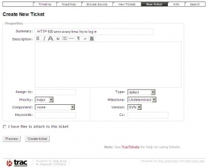

There exist two mailing lists for Habari, one focused on end-user support, and the other focused on nitty-gritty development and programming issues.
habari-users is entirely focused on Habari end-user support. This is the first place to ask for help. When reporting problems, please provide as much information as you can. Be sure to accurately copy any specific error messages you receive. If you can reliably reproduce a problem, describe in detail the steps necessary to do so. It is often helpful to provide a link to your site, so that others can see the problem first-hand, but at the least please indicate who your hosting provider is.
habari-dev is focused on Habari development: programming, plugin design, and the like. All of Habari's long-term development takes place on this list, and ideas and suggested, debated, and revised. If you're interested in helping Habari programming, this is the list for you.
IRC stands for Internet Relay Chat. It is a form of realtime instant messaging that allows groups to meet and discuss subjects of common interest.
Habari maintains an irc channel on freenode, #habari. It can either be accessed directly through your favorite irc client, or, if you're new to irc, there is a helpful Habari plugin that allows you to access the channel from within your Habari admin. The plugin, called livehelp, can be downloaded from Habari's plugin distribution page. Install it as you would any other plugin and join us if you have any questions or issues.
Habari succeeds because people like you help improve it every day. One of the easiest ways to contribute to the success of Habari is to report problems. The habari-users mailing list is the first place that problems should be reported: if the issue is known, you'll be provided with confirmation of that fact and hopefully some information to help you work around the problem until it is fixed. If you identify a new problem, you may be asked to file a bug report. It's easy to do!
Habari Trac is the place to file bug reports. Before you can file bugs, you need to register an account with the system. Click the Register link at the far right of the screen. Once you've created an account you can log in by clicking on the Login link. Once logged in, you can file a new ticket!
The first thing you need to provide is a succinct summary of the problem. Be concise, but don't be vague: the summary you provide is the first thing people will read when reviewing bugs to be fixed, so make sure that the developers get a jumpstart on your problem by supplying them with a meaningful summary. If you see an HTTP 500 error page every time you try to log in, a good summary might be
HTTP 500 error every time I try to log in
This immediately indicates the specific error and the action that produces it. Even better would be the error message from the web server error log file that accompanies this browser-side symptom. A poor summary for this problem would be
Can't log in!
This does not indicate the specific error you see.
Summaries are important! Please try hard to provide a meaningful summary.
Next you indicate whether your ticket is due to a defect with Habari, or if you're simply making a suggestion for enhancement. The Habari developers love to see suggestions for enhancements because they help steer the long-term growth of Habari.
Below this you enter a full description of the problem or suggestion. Be as verbose as possible. If you have a specific error message, paste it here. If you have log data, paste it here. If you can reproduce the problem in one or more ways, describe in detail each of the ways to do so. The more information you can provide, the greater the chance of a developer fixing the problem! You can also upload screenshots if that helps to describe the problem: click the checkbox labeled "I have files to attach to this ticket". This will allow you to upload files that will be attached to your report. The version of Habari you are using, the browser and its version, and the database backend ( MySQL, SQLite, Postgres, etc. ) are also very helpful in diagnosing and fixing issues that you report.
In the section labeled Ticket Properties you can fine-tune some details about your ticket. If you're not sure what any of these mean, leave them all at the default values.
When you're all done, click "Submit ticket". This will add your ticket to the system, and a Habari developer will eventually review it. You might want to bookmark your ticket, and come back to check on it periodically: the Habari developers might ask you questions in comments to your ticket, seeking additional information or asking you to try a proposed fix to confirm that it works for you.
Please keep in mind when filing tickets for bug reports or feature enhancements that the list of tickets is completely public. DO NOT post any passwords or other sensitive information.
As mentioned above, all items filed in the Habari Trac are public. If you are reporting a security problem, or a potential security problem, we respectfully ask that you first contact security@habariproject.org so that we can review the situation with you without jeopardizing our users' sites. If you open a ticket with details of how to execute an attack against a Habari installation, someone somewhere will see that information and exploit it.